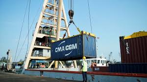
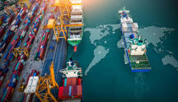
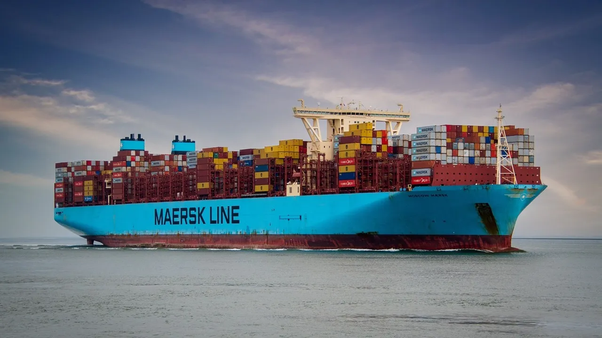

kapal merupakan alat transportasi yang keren, terbukti dengan banyaknya bentuk dan model yang banyak di jumpai di lautan.kapal memberikan banyak kontribusi pada perdagangan dunia, banyak barang yang di perjual belikan melalui jalur laut.

kapal membuat perjalanan laut menjadi efisien, dengan jumlah muatan yang begitu menakjubkan maka waktu yang lama pun ngga akan terasa untuk di nantikan.

walaupun kapal lambat tapi jumlah muatannya merupakan sebuah keunggulan, muatan yang begitu masif membuatnya tak tergantikan oleh transportasi lain.

kapal merupakan transportasi terbaik sepanjang sejarah, baik dari dulu sampai sekarang kapal sekarang kapal selalu menjadi andalan para pengusaha perdagangan dunia.